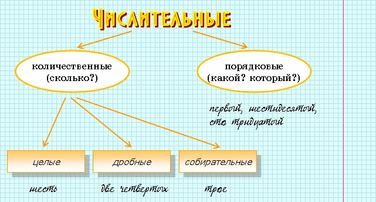
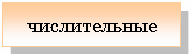

Имя числительное отвечает на вопросы сколько? который? (какой?).
|
Имя числительное – это самостоятельная часть речи, обозначающая количество и порядок предметов при счете. Имя числительное отвечает на вопросы сколько? который? (какой?). |
 |
Мне (сколько?) шестнадцать лет. Я учусь в (каком?) десятом классе. |

 |
Количественные числительные изменяются по падежам, но не имеют рода (кроме слов один, два) и числа (кроме слова один). |
 |
Простое числительное – это слово с одни корнем. Например: два, четыре, сорок, сто, второй. |
|
Сложное числительное – слово с несколькими корнями. Например: двенадцать, шестьдесят, двухтысячный. |
|
Составное числительное состоит из нескольких слов, каждое из которых может быть как простым, так и сложным. Например: сорок восемь, сто восемьдесят два, двести сорок шестой. |
 |
|||
|
один | согласуется с существительным в падеже и склоняется как прилагательное | один день, одного дня, одному дню… |
|
от двух до четырех | имеют особые формы склонения | двух, двум, двумя… |
|
от пяти до двадцати и тридцать | как существительное кость 3-го склонения | двадцать, двадцати, двадцати… |
|
сорок, девяносто, сто | образуют две формы: в И. и В.п. – сорок, девяносто, сто, во всех остальных падежах – сорока, девяноста, ста | |
|
полтора и полтораста | образуют две формы: в И. и В.п. – полтора, полтораста, во всех остальных – полутора, полутораста | |
|
сложные от пятидесяти до восьмидесяти, от двухсот до девятисот | склоняются обе части | восемьдесят, восьмидесяти… |
|
составные | склоняются все слова | двести двадцать, двухсот двадцати... |
|
Пять яблок лежит на столе. |
|
Собирательные числительные обозначают количество предметов как одно целое. |
|
двое, трое, четверо. |
|
Кроме слова оба (обе), они образуются от количественных числительных. Собирательные числительные склоняются как имена прилагательные во множественном числе. |
|
пятеро, пятерых, пятерым (пятеро), пятерыми, (о) пятерых. |
|
В предложении сочетание собирательного числительного с существительным является одним членом предложения. |
|
Пятеро учеников убирали класс. |
|
Дробные числительные называют не целые числа. Кроме слов полтора и полтораста, дробные числительные – составные. Они состоят из количественного (числитель дроби) и порядкового (знаменатель дроби) числительных. |
|
две третьих |
|
При склонении дробных числительных изменяются обе части: числитель склоняется как целое число, а знаменатель – как прилагательное во множественном числе. |
|
две пятых, двух пятых, двум пятым… |
|
Порядковые числительные называют порядковый номер при счете. Кроме слов первый и второй, они образуются от количественных числительных. |
|
три – третий |
|
Склоняются порядковые числительные, как прилагательные. В предложении, как и прилагательные, обычно выступают в роли определения. |
|
Я пошел в одиннадцатый класс. |
|
Местоимение – самостоятельная часть речи, которая указывает на предмет или его признак, не называя их. |
|
Личные (я, мы, ты, вы, он, она, оно, они). |
|
Возвратное (себя). |
|
Притяжательные (мой, наш, твой, ваш, свой). |
|
Вопросительные (кто, что, какой, чей, который, сколько и др.). |
|
Указательные (тот, этот, такой, столько, там, тут и др.). |
|
Относительные (кто, что, чей, который, сколько и др.). |
|
Неопределенные (некто, нечто, некоторый, несколько, что-то и др.). |
|
Отрицательные (никто, ничто, некого, нечего, никакой, ничей и др.). |
|
Определительные (сам, весь, всякий, каждый, иной, и др.). |
|
1. Личные местоимения и возвратное местоимение себя образуют
особый тип склонения.
2. Склонение всех остальных местоимений сближается со склонением имен прилагательных. |
| именительный падеж | – |
| родительный падеж | себя |
| дательный падеж | себе |
| винительный падеж | себя |
| творительный падеж | собой(-ю) |
| предложный падеж | (о) себе |